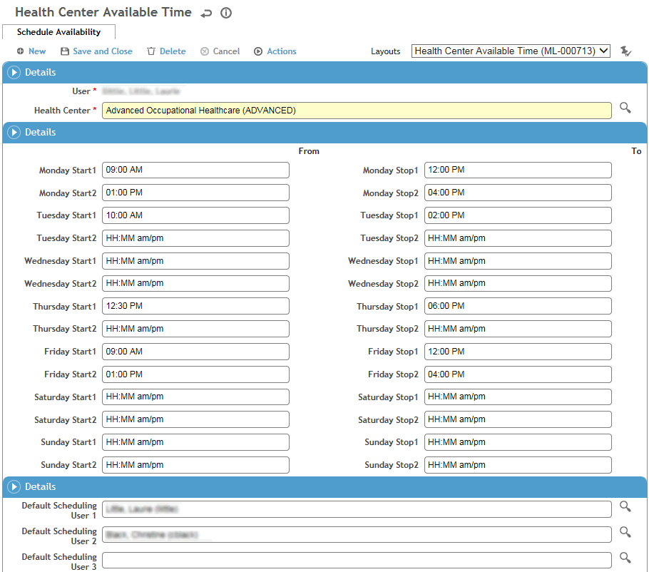

Each scheduling user can set up their own available times, as well as identify other scheduling users to appear in the Master view. Practitioners set up their schedule availability for each health center they work with.
In the Occupational Health menu, click Scheduling Availability.
Define the times you are available.
Select the scheduling users whose schedule you want to be able to view in the Master view.
Be sure to assign yourself as User 1 in order to see your available times on the Daily and Weekly views of your schedule.
Click Save.
In the Occupational Health menu, click Scheduling Availability.
On the Linked Health Centers tab, click New.
Select the health center that you want to define your schedule for.
Define the times you are available at this health center.
Select the scheduling users whose schedule you want to be able to view in the Master view.
Be sure to assign yourself as User 1 in order to see your available times on the Daily and Weekly views of your schedule.
The look-up list defaults to scheduling users who are associated with the same health center; to choose a user at a different health center, clear the health center field in the filters at the top.
Click Save.
To define your schedule for a different health center, return to the Linked Health Centers tab and repeat steps 2-6.

You can schedule activities for both Cority Scheduling Users and employees. Four tabs provide different ways of working with or viewing scheduling information:
Daily View and Weekly View allow scheduling users to work with their schedule.
Master View can display 5 or 10 users, depending on your system settings (see Changing Your System Settings).
Employee view allows you to view an employee’s schedule history or schedule employee activities.
For more information, see: